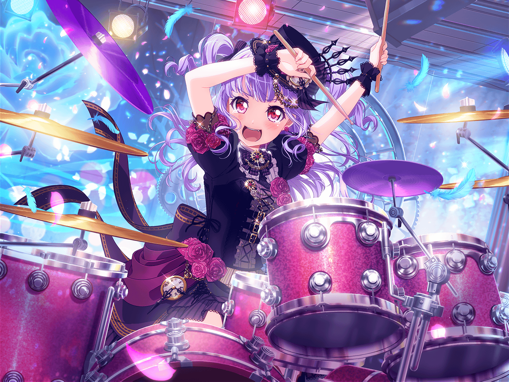

ショッピングモール
あこ
えへへ、今日はなに買おっかなー？
あこ
あっ、{{userName}}さんだ！
{{userName}}さんもお買い物〜？
あこ
あこはねー、りんりんと待ち合わせ！
……なんだけど、実は早く来すぎちゃったんだよね
あこ
少し話そうかって……いいの？ やったー！
あこ
え？ ……さ、最近元気がなかったから、気になってた？
そ、そんなことは……
あこ
……
あこ
あ、あはは。
実は、{{userName}}さんの言う通りなんだ
あこ
……Roseliaね、ちょっと前までピンチだったんだ。
ていうか、あこがピンチだったんだけど
あこ
色々あって、友希那さんと言い合いになって……
それであこ、練習してたスタジオ、飛び出しちゃったの
あこ
そのまま練習も行かなくなっちゃって……だって、そういう時って
どうやって戻ればいいか、わかんなくない？
あこ
休んでる間は、ずーっとゲームしてたんだけどさ。
実はあこ、ゲームしながらずっと
Roseliaのこと考えてたんだ
あこ
ううん、ゲームしてる時だけじゃない。
何しててもRoseliaが気になって、頭から離れなかった
あこ
最初は、考えないようにしようって思ってたんだけど
やっぱりダメで……
だからあこ、逆にいーっぱい考えることにしたの
あこ
何をって、決まってるじゃん！
Roseliaを取り戻すために、
あこには何ができるのかってことだよ！
あこ
あこはRoseliaが大好きだから、どうしても
Roseliaには元に戻ってほしかったんだ
あこ
いっぱい、いーっぱい考えて、おねーちゃんにも相談して……
それでね、あこ、りんりんと一緒に
衣装を作ることにしたんだ！
あこ
もちろん、あこはお裁縫できないから、
実際に作ったのはりんりんなんだけど。でもあこも、
布の切れ端片付けたりとか、たくさん案を出したりしたんだよ！
あこ
２人で衣装作るの、すっごく楽しかった！
りんりんってね、すっごく色々考えてくれてるんだよ！
あこ
衣装が引っかからないようにーとかそういうこと。
そんなところまで見てるんだって、あこびっくりしちゃった！
あこ
そうやって一生懸命やってたからかな？
そのあとね、リサ姉と紗夜さんが会いに来てくれたの
あこ
なんかリサ姉と紗夜さんも、Roseliaのためにって
色々悩んでたみたいで……あこ達と同じ気持ちだったんだ
あこ
……それでね、リサ姉と紗夜さんが言ってくれたの。
『大切なことに気づかせてくれてありがとう』って
あこ
あこはRoseliaがしっかり見えてたんだって。
えへへ
あこ
あんな風に言ってもらえるなんて思わなかったから、
もうすっごく、すっごくすっごくうれしかったよ！
あこ
これならRoseliaは取り戻せる！ って、そう思った。
だってみんな、Roseliaのことが大好きだったんだもん！
あこ
カッコイイRoseliaが戻って、本当によかった……！
あこ
戻ってきたRoseliaがどれだけカッコイイかは、
次のライブでばっちり見せるから、絶対観に来てよね
あこ
ふっふっふ。よしよし。
深淵より得られしわらわの力、とくと見るがいい
あこ
……って、あーーー！ もうこんな時間！
りんりん、もう着いてるかもっ
あこ
あこ、りんりんに連絡しなくちゃ！
ああっ、しかも待ち合わせ反対側だったっけ！？
あこ
{{userName}}さん、話きいてくれてありがとー！
またねー！